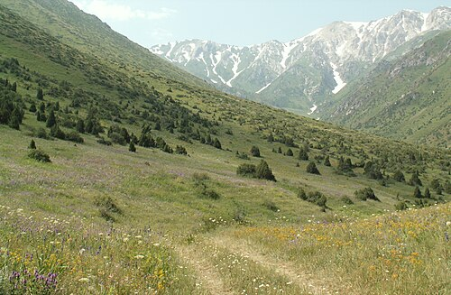
Ең көне қорық (1926).
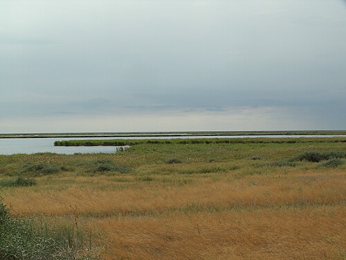
Қоқиқаздар мекені.
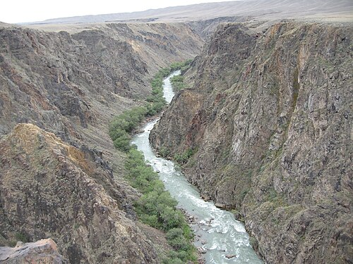
Табиғи каньон.
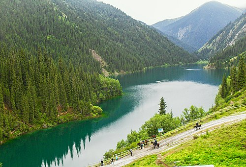
Тянь-Шань маржаны.
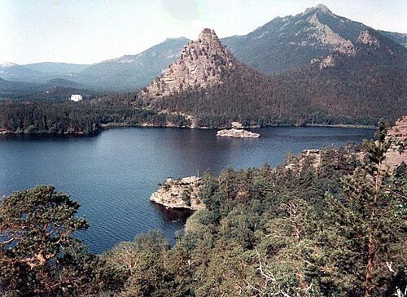
Арқаның жауһары.
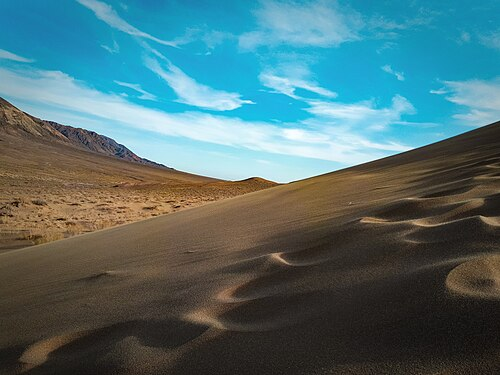
Әнші бархан.
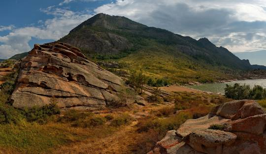
Жасыбай көлі.
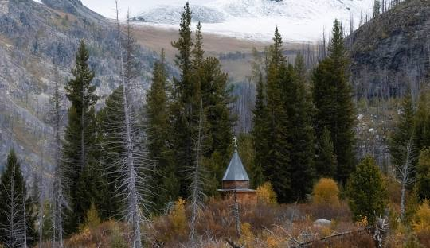
Алтайдың биігі.
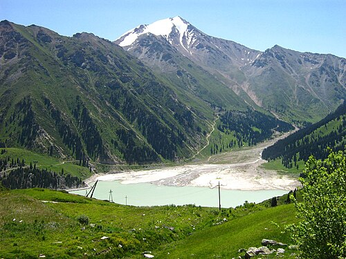
Алматы маңындағы тау табиғаты.
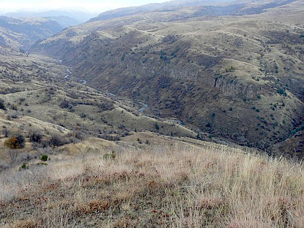
Тянь-Шань сілемдері мен аңғарлары.
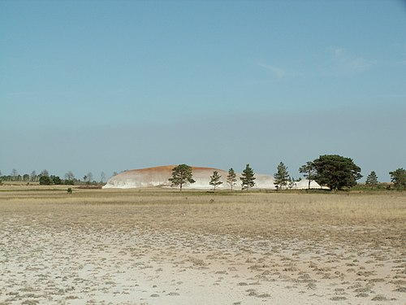
Орман-тоғай мен көлдер мекені.
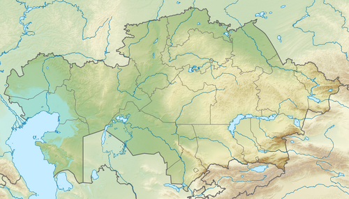
Арал өңірінің сирек фаунасы.
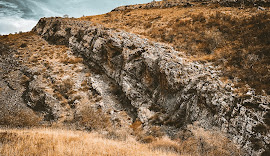
Эндемик өсімдіктер аймағы.
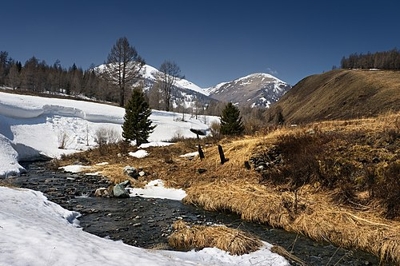
Көл мен таулар экожүйесі.
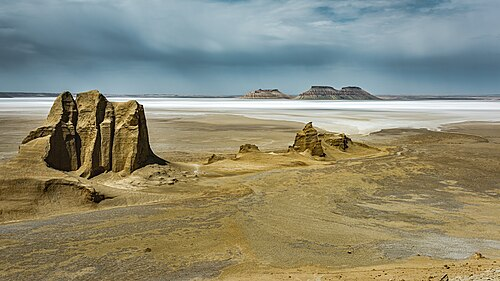
Бозжыра жылғалары мен даласы.
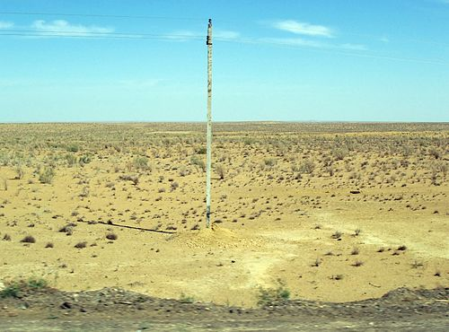
Шөлейт табиғат пен жануарлар дүниесі.
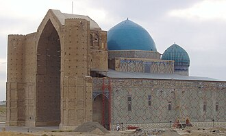
Түркістандағы тарихи мұра.
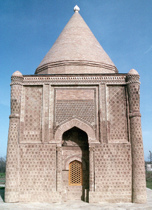
Құмқала өрнектерімен әйгілі.
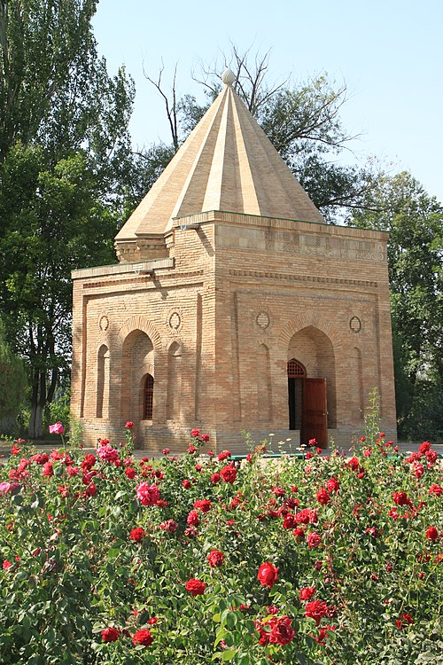
XI–XII ғ. архитектуралық ескерткіш.
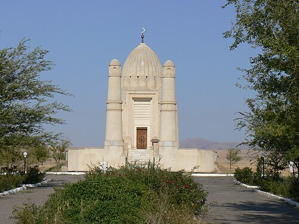
Әулиелі мекен, зиярат орны.
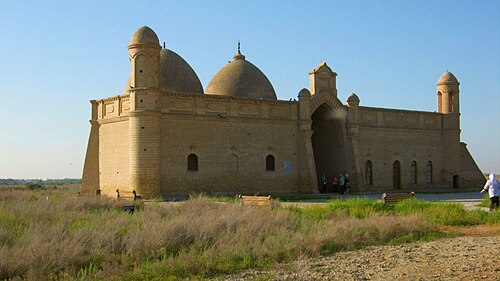
Яссауи ілімінің ізашары.
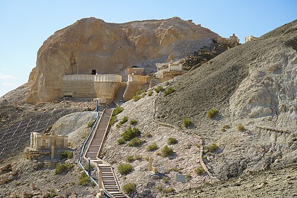
Маңғыстаудағы киелі орын.
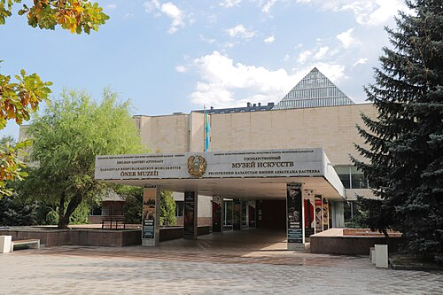
ҚР бейнелеу өнерінің қазынасы.
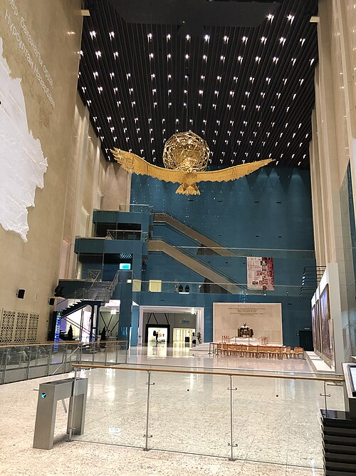
Ел тарихы мен мәдениетінің орталығы.
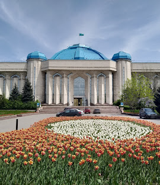
Археология мен этнография экспозициялары.
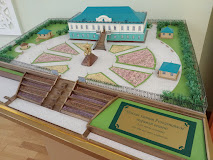
Петропавлдағы тарихи кешен.
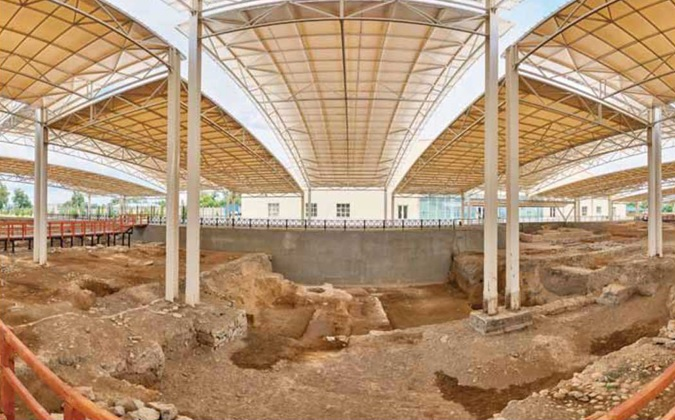
Қала тарихы мен артефакттар.
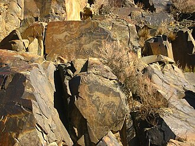
Жартастағы ежелгі суреттер.
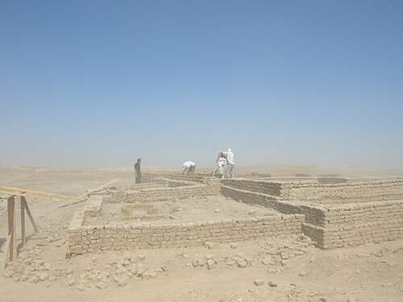
Ортағасырлық қала орны.
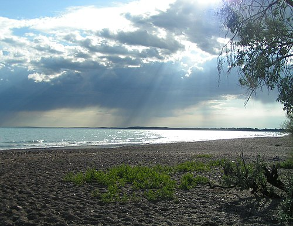
Жартылай тұзды, жартылай тұщы ерекше көл.